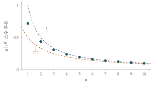

이 절에서는 두 문제를 다룬다. 1997년의 첫 번째 문제는 \(e\)가 무리수(irrational number)임을 증명(proof)한다. 2024년의 두 번째 문제는 같은 아이디어를 더 교묘하게 변형하여 \(e^2\)이 무리수임을 증명하는데, 이것은 실제로 훨씬 어렵다.
STEP III 1997, 문제 7
계속 읽기 전에 문제를 먼저 읽어 보자. 문제는 STEP Support Programme의 문제 데이터베이스에 있다: step.maths.org/questions/97-s3-q7
STEP III 2024, 문제 7
다음으로 넘어가기 전에 문제를 먼저 읽어 보자. 이 문제는 OCR에서 내려받을 수 있는 2024년 STEP 문제지 모음(zip 파일)의 STEP III 문제지에 있다: www.ocr.org.uk/Images/725753-2024-past-papers.zip
도입
1.3 절에서는 \(\sqrt2\)가 간단한 방정식 \(x^2 = 2\)를 만족한다는 사실을 이용하여 \(\sqrt2\)가 무리수임을 증명하였다. 그러나 \(e\)는 우리가 아는 한 그런 방정식을 전혀 만족하지 않는다. 우리가 가진 것은 그 급수(series)뿐이다. \[e = 1 + \frac{1}{1!} + \frac{1}{2!} + \frac{1}{3!} + \cdots.\] 급수가 어떻게 어떤 수가 분수가 아니라는 것을 알려 줄 수 있을까?
그 답은 수론(number theory)에서 가장 유용한 아이디어 가운데 하나이다. 정수(integer)는 \(0\)과 \(1\) 사이에 엄격하게 놓일 수 없다. 어떤 양이 정수임을 보이고, 동시에 그 양이 \(0\)과 \(1\) 사이에 엄격하게 놓임을 보일 수 있다면 모순(contradiction)이 생긴다. 이 절의 모든 내용은 이 주제의 변주이다.
시작하기 전에
\(e = p/q\)라고 가정하자. \(e\)에 \(q\)를 곱하면 정수가 된다. \(e\)의 급수의 각 항에 \(q!\)을 곱하면 어떻게 되는가?
\(k \leq q\)이면 \(\dfrac{1}{k!}\)에 \(q!\)을 곱한 값은 정수이다. 따라서 \(q!\,e\)는 정수 부분(처음 \(q+1\)개의 항)과 “꼬리(tail)”(그 뒤의 모든 항)로 나뉜다. \(e = p/q\)이면 \(q!\,e\) 자체가 정수이므로 꼬리도 정수여야 한다. 계획은 꼬리가 \(0\)과 \(1\) 사이에 엄격하게 놓임을 보이는 것이다.
차근차근 풀기
단계 1 준비 문제: \(e\)는 무리수이다
급수 \(b_n\)은 첫째항과 공비가 모두 \(\frac{1}{n+1}\)인 등비급수(geometric series)이므로 \[b_n = \frac{1/(n+1)}{1 - 1/(n+1)} = \frac{1}{n}.\]
\(a_n\)과 \(b_n\)을 항별로 비교하라. 어느 쪽이 더 큰가?
첫째항은 서로 같다. 그 뒤로는 \((n+1)(n+2) > (n+1)^2\)이고, 일반적으로 \(k \geq 2\)일 때 \((n+1)(n+2)\cdots(n+k) > (n+1)^k\)이므로, \(a_n\)의 이후 각 항은 \(b_n\)의 대응하는 항보다 작다. 따라서 \(0 < a_n < b_n = 1/n\)이다.
이제 \(a_n\)이 실제로 무엇인지 살펴보자. \(e\)의 급수에 \(n!\)을 곱하면 \[n!\,e = \underbrace{\frac{n!}{0!} + \frac{n!}{1!} + \cdots + \frac{n!}{n!}}_{\text{정수}} + \underbrace{\frac{n!}{(n+1)!} + \frac{n!}{(n+2)!} + \cdots}_{=\,a_n}.\] \(0 < a_n < 1\)이므로 \(n!\,e\)의 정수 부분(integer part)은 첫 번째 묶음이고 \(a_n\)은 소수 부분(fractional part)이다. 즉 \(a_n = n!\,e - [n!\,e]\)이다.
이제 증명을 마무리하라. \(e = p/q\)라고 가정하자. \(n\)의 값을 무엇으로 택해야 하는가?
\(n = q\)로 택한다. 그러면 \(q!\,e = (q-1)!\,p\)는 정수이므로 그 소수 부분 \(a_q\)는 \(0\)이다. 그런데 \(a_q > 0\)이다. 모순이다. 따라서 \(e\)는 무리수이다.■
이 증명은 1815년 무렵 푸리에(Joseph Fourier)가 제시한 것이다.
단계 2 \(e^2\)이 더 어려운 이유
같은 아이디어를 \(e^2\)에 적용해 보라. 그 급수는 \(\sum 2^k/k!\)이다. \(n!\)을 곱하고 꼬리를 살펴보면 무엇이 잘못되는가?
이제 꼬리는 \(\dfrac{2^{n+1}}{n+1} + \dfrac{2^{n+2}}{(n+1)(n+2)} + \cdots\)이고, \(2\)의 거듭제곱이 모든 것을 망쳐 버린다. 꼬리가 더 이상 작지 않은 것이다. \(n!\)을 곱해도 분자의 \(2^k\)에는 도움이 되지 않는다.
2024년 문제의 비결은 \(e^2\)을 아예 피하는 것이다. \(e^2 = p/q\)이면 \[qe = \frac{p}{e}.\] 이제 두 수 \(e\)와 \(1/e\)가 생기는데, 각각은 계승(factorial)으로 된 급수를 가지며 골치 아픈 \(2\)의 거듭제곱이 없다. \[e = \sum_{k=0}^{\infty} \frac{1}{k!}, \qquad \frac1e = \sum_{k=0}^{\infty} \frac{(-1)^k}{k!}.\]
단계 3 두 꼬리
소문항 (i)은 준비 문제와 정확히 같다. 즉 \(0 < f(n) < 1/n\)이다.
소문항 (ii)에서 \(g(n)\)은 항의 크기가 감소하는 교대급수(alternating series)이다.
\(t_1 > t_2 > t_3 > \cdots > 0\)인 교대급수 \(t_1 - t_2 + t_3 - \cdots\)의 합이 왜 \(0\)과 \(t_1\) 사이에 있는가?
항을 둘씩 묶으면 \((t_1 - t_2) + (t_3 - t_4) + \cdots\)는 양수인 괄호들의 합이므로 양수이다. 다른 방식으로 묶으면 \(t_1 - (t_2 - t_3) - (t_4 - t_5) - \cdots\)는 \(t_1\)에서 양수인 괄호들을 뺀 것이므로 \(t_1\)보다 작다. 여기서 \(t_1 = \frac{1}{n+1}\)이고, 각 항은 앞의 항을 \(1\)보다 큰 수로 나눈 것이므로 항들은 감소한다. 따라서 \(0 < g(n) < \frac{1}{n+1}\)이다.
단계 4 다시 정수
준비 문제에서와 똑같이 \(e\)에 \((2n)!\)을 곱하고 꼬리를 떼어 내면 \[(2n)!\,e = (\text{정수}) + f(2n).\] 따라서 \((2n)!\,e - f(2n)\)은 정수이다. 이제 \(1/e\)에 대해서도 같은 일을 하면 \[\frac{(2n)!}{e} = \sum_{k=0}^{2n} (-1)^k \frac{(2n)!}{k!} + \sum_{k=2n+1}^{\infty} (-1)^k \frac{(2n)!}{k!}.\]
꼬리의 첫째항, 즉 \(k = 2n+1\)인 항의 부호는 무엇인가? 꼬리는 \(g(2n)\)과 어떤 관계인가?
꼬리의 첫째항에서 \(k = 2n+1\)은 홀수이므로 그 항은 음수이다. 꼬리는 \[-\frac{1}{2n+1} + \frac{1}{(2n+1)(2n+2)} - \cdots = -g(2n).\] 따라서 \(\dfrac{(2n)!}{e} + g(2n)\)은 정수이다.■
문제에서 \(n\) 대신 \(2n\)을 쓰는 이유가 바로 이것이다. 곱하는 수가 짝수이면 \(1/e\)의 꼬리는 정확히 \(-g\)가 되어 부호를 예측할 수 있다.
단계 5 모순
\(qe = p/e\)라고 가정하자. 양변에 \((2n)!\)을 곱하고 단계 4를 이용하면 \[q\bigl(\text{정수} + f(2n)\bigr) = p\bigl(\text{정수} - g(2n)\bigr).\] 정리하면 \(q f(2n) + p g(2n)\)은 정수들의 조합과 같으므로 정수이다. 이것이 소문항 (iv)이다.
이제 단계 3에서 구한 범위를 이용하라. \(n\)이 매우 클 때 \(q f(2n) + p g(2n)\)은 어떻게 되는가?
\(f(2n)\)과 \(g(2n)\)은 모두 양수이므로 \(q f(2n) + p g(2n) > 0\)이다. 또한 \[q f(2n) + p g(2n) < \frac{q}{2n} + \frac{p}{2n+1} < \frac{p+q}{2n}.\] \(n > (p+q)/2\)로 택하자. 그러면 \(q f(2n) + p g(2n)\)은 \(0\)과 \(1\) 사이에 엄격하게 놓인 정수이다. 이는 불가능하므로 \(e^2\)은 무리수이다.■

돌아보기
핵심 동력은 “0과 1 사이에 엄격하게 놓인 정수는 없다”는 사실이다. 두 증명 모두 반드시 정수여야 하는 양을 만들고 그 양을 가두어 버린다.
계승은 꼬리를 작게 만든다. \(n!\)을 곱하면 급수의 앞부분은 정수가 되고, \(1/n\)처럼 줄어드는 꼬리가 남는다.
정면 공격이 실패하면 식을 바꾸어 써라. \(e^2 = p/q\)를 정면으로 공략하는 대신 \(qe = p/e\)로 바꾸어 써서, 어려움을 더 쉬운 두 수에 나누어 실었다.
세부 사항이 중요하다. \(n\) 대신 \(2n\)을 택함으로써 꼬리의 부호가 정해졌다. 많은 증명이 이런 작은 세부 사항에 달려 있다.
숨은 수학
리우빌(Joseph Liouville)은 1840년에 \(e^2\)이 무리수임을, 더 나아가 정수 계수(coefficient)를 갖는 어떤 이차방정식(quadratic equation)도 만족하지 않음을 증명하였다. 1873년 에르미트(Charles Hermite)는 훨씬 더 나아가 \(e\)가 초월수(transcendental number)임을, 즉 정수 계수를 갖는 어떤 다항식(polynomial)의 근도 아님을 증명하였다. 그의 증명은 바로 위의 논증, 즉 정수를 만들고 그것이 \(0\)과 \(1\) 사이에 엄격하게 놓임을 보이는 논증을 정교하게 발전시킨 것이다. 9년 뒤 린데만(Ferdinand von Lindemann)은 에르미트의 방법을 응용하여 \(\pi\)가 초월수임을 보였고, 이로써 자와 컴퍼스로 “원을 정사각형으로 만드는” 고대의 문제가 불가능하다는 것이 마침내 증명되었다.
아직 모르는 것
이 방법들이 이토록 강력한데도, 민망할 정도로 간단한 질문들이 여전히 풀리지 않은 채 남아 있다. \(e + \pi\)는 무리수인가? \(e\pi\)는? 둘 중 적어도 하나는 초월수여야 하지만(연습문제 4), 아무도 모른다. \(\zeta(3) = 1 + \frac{1}{8} + \frac{1}{27} + \cdots\)은 무리수인가? 그렇다. 아페리(Roger Apéry)가 1978년에 이를 증명하여 수학계를 놀라게 하였다. \(\zeta(5)\)는? 아무도 모른다.
근사
이 증명들의 바탕에는 더 깊은 아이디어가 있다. 어떤 수가 분수로 지나치게 잘 근사된다면 그 수는 무리수라는 것이다. \(e\)의 급수의 부분합(partial sum)은 매우 빠르게 \(e\)에 아주 가까워지는 분수들이다. 분수는 다른 분수들로 그만큼 잘 근사될 수 없다. 이것이 디오판토스 근사(Diophantine approximation)의 출발점이다. 이 수론의 분야는 2.9 절에서 더 탐구할 수 있는데, 그곳에서는 다른 적분들의 모임이 \(e\)에 더욱 가깝게 다가가는 분수들을 만들어 낸다.
사고 기술
어떤 수가 무리수임을 증명하려면, 그 수가 분수라고 가정하고, 그로부터 반드시 정수여야 하는 양을 만든 다음, 그 양이 \(0\)과 \(1\) 사이에 엄격하게 놓임을 보인다.
기술의 핵심은 그 양을 고르는 데 있다. 여기서는 계승을 곱하여 급수의 대부분을 정수로 만들고, 작지만 양수인 꼬리를 남겼다.
더 도전하기
\(1/e\)만 이용하기. \(1/e = p/q\)라고 가정하고 \(1/e\)의 교대급수만을 이용하여 \(e\)가 무리수임을 증명하라.
\(\sin 1\)은 무리수이다. \(\sin 1 = 1 - \dfrac{1}{3!} + \dfrac{1}{5!} - \cdots\)을 이용하여 \(\sin 1\)이 무리수임을 증명하라. (적당한 홀수의 계승을 곱하라.)
\(\pi\)는 왜 안 되는가? 이 방법이 \(\pi\)에 직접 적용되지 않는 이유를 설명하라. 그런 다음 급수 대신 적분을 이용하여 \(\pi\)가 무리수임을 보인 Ivan Niven의 한 쪽짜리 증명(1947)을 찾아보라. 실력 있는 A 레벨(A level, 영국의 대학 입학 자격 시험) 학생이라면 충분히 이해할 수 있다.
둘 중 하나는 초월수이다. 심화 \(e\)와 \(\pi\)가 \(x^2 - (e+\pi)x + e\pi = 0\)의 근임을 보여라. 계수가 대수적 수(algebraic number)인 다항식의 근은 그 자체로 대수적 수이며, \(\pi\)는 대수적 수가 아니라는 사실(린데만)을 가정해도 좋다. 이로부터 \(e + \pi\)와 \(e\pi\) 중 적어도 하나는 초월수임을 이끌어 내라.
더 읽을거리
Aigner & Ziegler, Proofs from THE BOOK, 제8장 “Some irrational numbers”(몇 가지 무리수). 바로 이 아이디어들을 이용하여 \(e\), \(e^2\), \(e^4\), \(\pi^2\)이 무리수임을 증명한다.
Ivan Niven, Irrational Numbers (Mathematical Association of America). \(\sqrt2\)부터 초월성까지 모든 것을 다루는 짧은 고전이다.
Julian Havil, The Irrationals (Princeton University Press). 무리수의 역사를 읽기 쉽게 풀어 쓴 책이다.